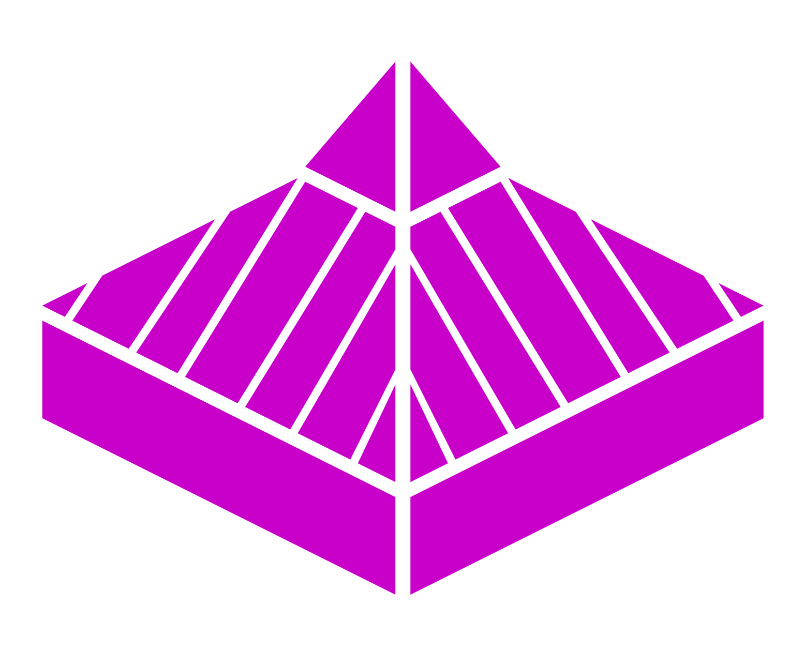

Mira antes de actuar.
Encuentra el espacio, al defensor y a tu compañero. Después, decide.

IES María Soliño1.º ESONo todo es correr con el balón. Mira, decide y ayuda a que tu equipo encuentre el camino.
El equipo avanza cuando todos participan.
Encuentra el espacio, al defensor y a tu compañero. Después, decide.
Cruza por detrás, vuelve a ofrecerte y da continuidad al juego.
Provoca una decisión defensiva y coordina tu acción con el apoyo.
Seis lecciones para llevar a la pista.
Una propuesta de seis sesiones. Tu docente adapta las tareas al grupo.
Prueba, recibe una explicación y vuelve a intentarlo. Este reto no es la evaluación práctica.
Dos líneas de 2×1 y una línea final de 2×2. Seis aspectos para observar.
La disposición de las líneas y las rotaciones se concretan en clase.
Escribe evidencias breves de una actuación. No hay escala ni ponderaciones fijadas. Las anotaciones se mantienen mientras esta página está abierta; puedes descargarlas antes de cerrar.
| Aspecto | Línea 1 · 2×1 | Línea 2 · 2×1 | Final · 2×2 |
|---|